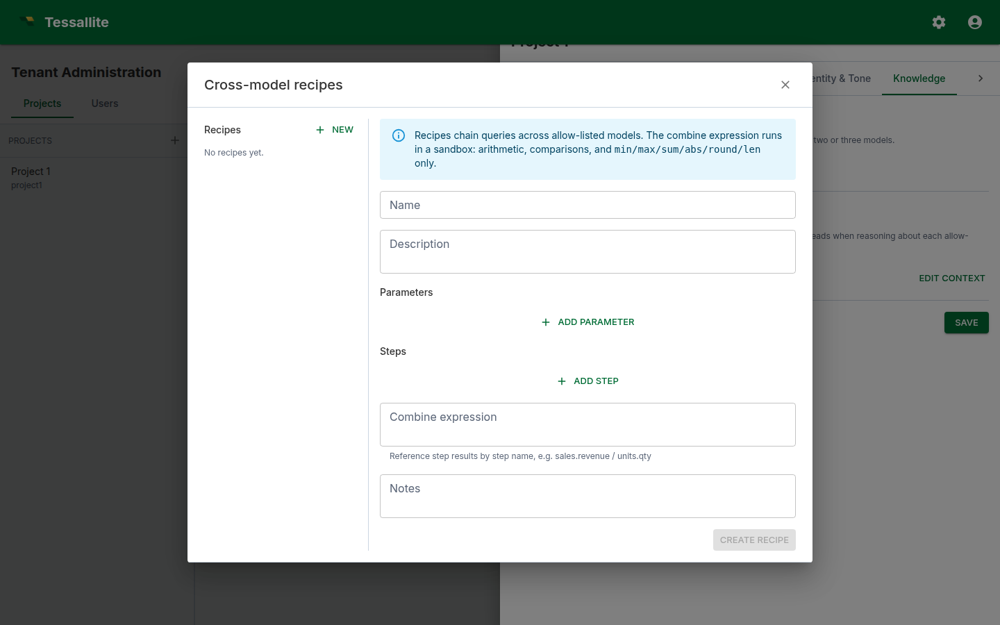

Cross-model calculation recipes
What this covers
A recipe is a multi-step calculation the agent can run against more than one model in a single turn. Recipes solve the class of analytical questions whose answer requires combining numbers from different fact tables — questions a single semantic query cannot answer. This article explains when a recipe is the right tool, how the recipe spec is shaped, how the engine executes it, and how to author recipes that the agent picks up reliably.
Why recipes exist
The semantic engine answers single-model questions: one fact table, one set of measures and dimensions, one time window. That covers most questions, but not all. Some questions are inherently multi-model:
- A ratio across facts. "What was inventory turnover last quarter?" requires
cogsfrom the orders fact andavg_inventoryfrom the stock fact. - A funnel across facts. "How many of last week's signups placed an order in the same week?" requires the signups fact and the orders fact.
- A re-baselining. "Express last month's revenue as a percentage of the trailing twelve months" requires two queries against the same model with different time windows.
The agent could in principle ask each query and stitch the result together in narration, but in practice that path is unreliable: the LLM forgets which numbers it has, the citations get muddled, and the judge has no clean structure to evaluate. A recipe gives the engine a deterministic plan to execute and the LLM a single result to narrate.
What a recipe is
A recipe is a small JSON document a modeller authors. It has:
- A name and description. Human-readable. The description is what the answer LLM reads when deciding whether to call the recipe.
- Parameters. Named placeholders the user's question fills in (typically a time window, a region, a category).
- Steps. An ordered list of single-model queries. Each step pins to a model in the project's allow-list, names its measures, dimensions, filters, and limit, and is given a step name.
- A combine expression. A small formula that combines the step results into a single value or table. You build it from blocks rather than typing text: each block is either a number, a step measure (pick one of your steps, then one of its measures from drop-downs), or an operation (divide, multiply, subtract, round, and so on) whose inputs are themselves blocks. Nest blocks to express things like "divide one step's measure by another, multiply by 100, then round to 2 decimals". Leave the combine set to None when the recipe simply runs the queries side-by-side. Because you choose steps and measures from lists, the references are always valid — and a step can be named anything (even a word like
global) without confusing the formula. - Notes. Free text. Read by the judge as a hint about what good output looks like.
Recipes live under Tenant Administration → Projects → \<project> → Conversational agent → Recipes. The same surface is exposed via the recipes API.

When to write a recipe
Write a recipe when:
- The answer requires data from two or more facts that share at least one dimension.
- The combine is stable (a fixed formula or a fixed ordering) and worth registering as a first-class capability.
- Users are asking the question often enough that they would benefit from a single-shot answer instead of stringing multiple turns together.
Do not write a recipe when:
- A single-model query answers the question. The semantic engine is faster, cheaper, and better-tested.
- The combine logic is bespoke per question. Free-form combines belong in narration, not in a recipe.
- The dimensions diverge across facts. If two facts grain at incompatible levels (e.g., daily orders vs. monthly inventory snapshots), the combine produces a misleading number. Reshape the underlying models first.
Anatomy of a recipe
A worked example. The recipe answers "what is inventory turnover for [time window]" by dividing COGS by average inventory.
{
"name": "Inventory turnover",
"description": "Inventory turnover is COGS divided by average inventory over the same window. Call this when the user asks about stock turn or how fast inventory moves.",
"parameters": [
{
"name": "window",
"description": "The time window the question is about.",
"resolves_to_glossary_entity": true
}
],
"steps": [
{
"name": "cogs",
"model_id": "<orders model id>",
"measures": ["cogs"],
"dimensions": [],
"filters": [{"name": "order_date", "op": "in_window", "value": "{window}"}],
"limit": 1
},
{
"name": "avg_inventory",
"model_id": "<stock model id>",
"measures": ["avg_inventory"],
"dimensions": [],
"filters": [{"name": "snapshot_date", "op": "in_window", "value": "{window}"}],
"limit": 1
}
],
"combine": {"op": "div", "args": [
{"ref": {"step": "cogs", "measure": "cogs"}},
{"ref": {"step": "avg_inventory", "measure": "avg_inventory"}}
]},
"notes": "Express the answer as a unitless ratio with two decimal places. Mention the window."
}The engine resolves {window} from the user's question via the glossary, runs the two queries against their respective models, evaluates the combine, and returns the value plus the two underlying step results. The narration LLM turns this into prose. The judge sees the combine and the step rows and verifies the answer against them.
How the LLM picks a recipe
The answer LLM is shown the description and parameters of every recipe in the project. When the user's question matches a recipe's description well, the LLM emits a run_recipe tool call instead of a query tool call. Two practical implications:
- Descriptions matter. The LLM picks recipes by description match. Write descriptions that name the metric the recipe computes ("inventory turnover", "year-on-year change", "conversion funnel") in the same words your users use.
- Avoid overlapping recipes. If two recipes have nearly identical descriptions, the LLM picks one essentially at random. Merge them or differentiate the descriptions sharply.
Common pitfalls
- Mismatched grains. When two steps return different dimension sets, the engine combines them against the finest shared grain. A step that returns a single value — for example a company-wide total — is broadcast across every row of the more detailed step, so each detailed row gets the correct combined value rather than the total being applied once and the rest silently dropped. Where the grains genuinely cannot be lined up — neither is a clean refinement of the other — the engine does not guess: it returns the rows as a visible stack instead of a single combined number, so you can see at a glance that the combine did not line up. If you see a stacked result where you expected one number, re-grain the steps (filter each step to a common dimension set) so the combine has an unambiguous shape.
- Empty step results. The scalar functions a combine can use (
round,abs,min,max,sum) pass a missing value straight through as a blank result instead of erroring — so a step that returns no rows yields a blank combined answer rather than crashing the whole turn. Division by zero behaves the same way: it produces a blank, not an error. If a blank should be read as "no data" rather than "zero", say so in the recipe note so the narration explains it. - Hard-coded time windows. Embedding "last 30 days" in the steps locks the recipe to one window. Use a parameter instead.
- Combines that hide divisions by zero. If the denominator step can return zero, add a note in the recipe so the narration explicitly handles it.
- Recipes that wrap a single query. If the recipe has one step and no combine, it is just a query. Use a query.
- Forgetting to allow-list both models. A recipe that references a model not on the agent's allow-list refuses at execution time. Allow-list every model named by every recipe.
- Saving an old measure name during a rename. Recipe writes wait for in-flight model-definition changes and validate measure names after the change finishes. If a measure was renamed while you were editing, the save is rejected instead of restoring the obsolete name. Refresh the recipe and select the new canonical name.
Operating recipes
After authoring a recipe, exercise it:
- Open the Chat tab and ask the question the recipe is meant to answer. Check that the trace drawer shows a
run_recipeplan, that each step ran, and that the combine value matches a hand calculation. - Watch the judge verdict on the Metrics → Recent calibration table. If the judge consistently warns or fails on recipe answers, the rubric needs a section that judges combine values explicitly.
- Add the question to the per-model glossary's Example questions so the eval runner exercises the recipe path on every run.